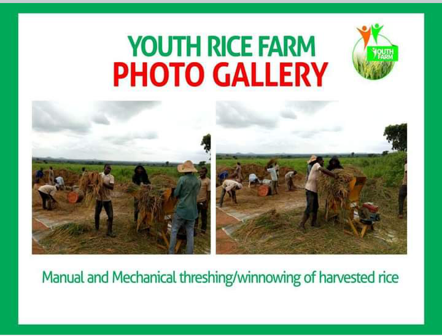

Enabling Environment for Young Farmers in Nigeria

Being part of a cooperative can be very beneficial for young people, as it gives them access to support and resources that they might not have otherwise. There needs to be a larger enabling environment in the agriculture sector to really make a difference. Things like improved infrastructure, market access, and access to information and resources are all important factors in supporting young farmers.
There are some steps that need to be taken to improve the enabling environment. The step that could be taken is to invest in rural infrastructure, like roads, markets, and storage facilities. This would make it easier for farmers to get their products to market and to access inputs and equipment. Another step could be to provide financial and technical assistance to farmers, to help them adopt new technologies and improve their productivity. Finally, there needs to be a focus on improving agricultural extension services to make sure that farmers have access to the latest information and advice.
One more step that could be taken is to invest in agricultural research and development. This would allow for the development of new technologies and practices that are suited to the specific needs of young farmers. For example, technologies like drip irrigation and conservation agriculture could be particularly beneficial for young farmers in Nigeria.
In addition to these steps, it's important to consider policy changes that could make a difference. For example, policies could be put in place to make land more accessible to young farmers and to remove barriers to accessing credit and financing. And policies could be implemented to promote youth involvement in agricultural cooperatives and decisions. Another policy change that could be considered is to promote the use of information and communication technologies in agriculture. This could involve things like mobile phone applications that provide information on weather, market prices, and farming practices. It could also involve using satellite imagery to monitor crop production and soil health.
There are many different steps that could be taken to improve the enabling environment for young farmers in Nigeria. And a combination of all of these steps could really make a difference. But it's important to be aware that there may be some resistance to change, especially from older generations who are used to doing things a certain way. This is where education and awareness-raising will be key!